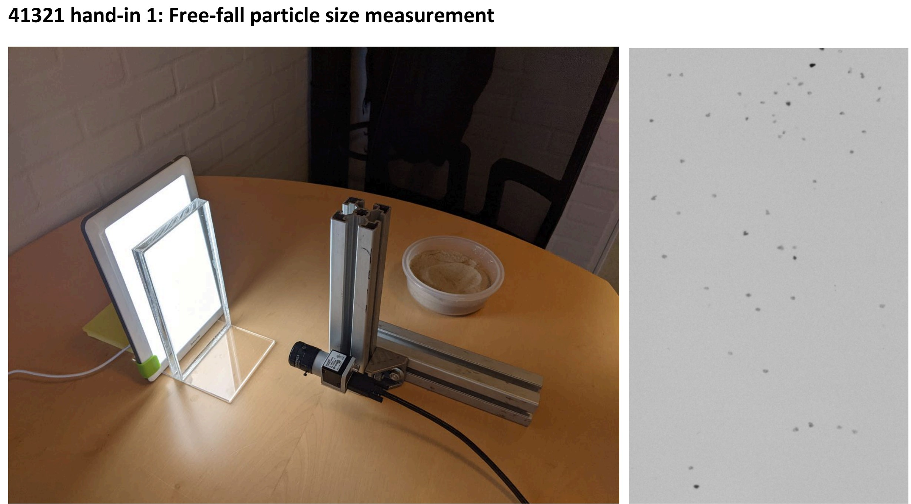
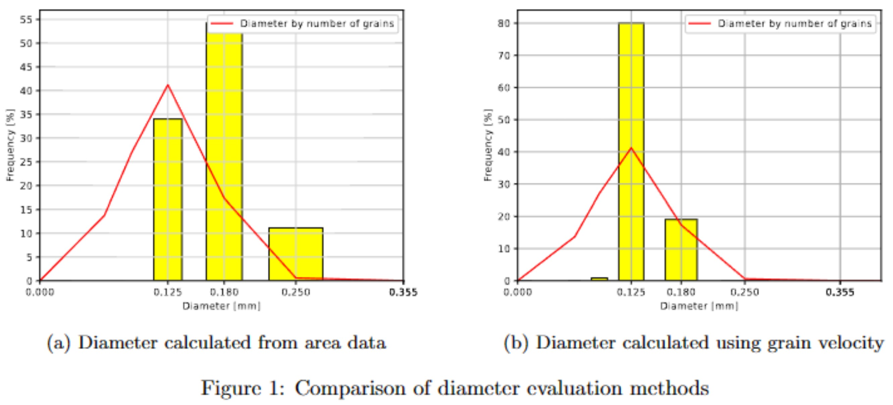
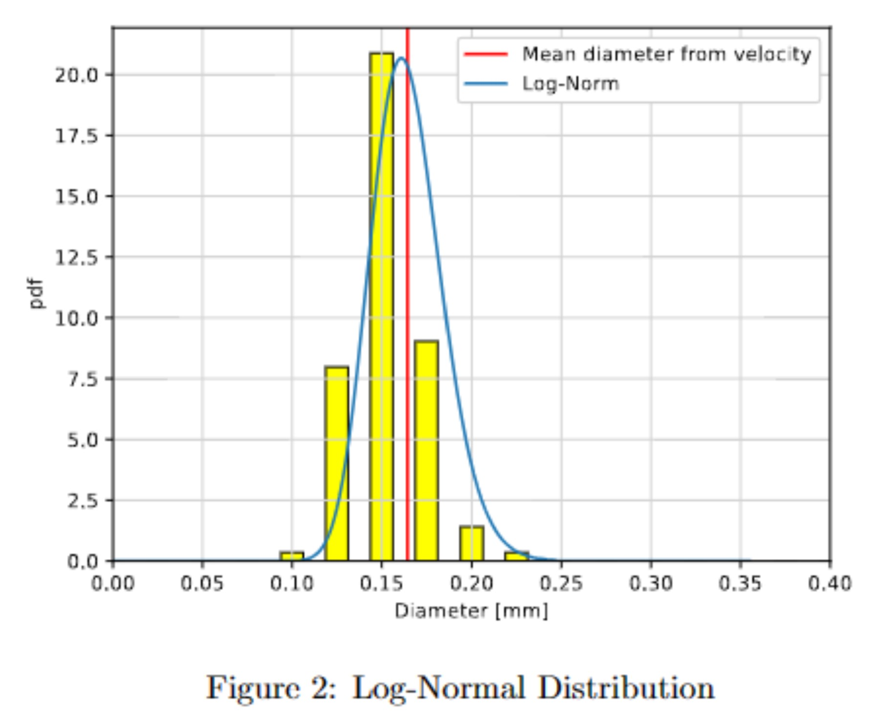

PIV
This assignment investigates a simple measurement of the size distribution of a particular batch of sand supplied to our laboratory in building 114. The sand is documented by the supplier in the attached datasheet, and it mainly consist of SiO2. The experiment is done in a small container made of Plexiglas with inner dimensions: height × width × depth = 200 mm × 100 mm × 10 mm. The container is filled with demineralized water and is illuminated with a Beuer TL 30 “Daylight therapy lamp” that provides bright and uniform light without flicker. The setup is observed with a monochrome camera (Basler acA1300-200um) running at frame rate of 168 Hz. An image of a ruler in the container provides the relation between physical space and camera pixels. The experiment is shown in a short video at DTU Learn. A tiny amount of sand is released at the top of the container,and the sand grains are recorded as a long series of images as the particles fall freely in the water.The temperature is 22°C
SetupThe text below is text from my solution, adjusted to html5 and shortened by ChatGPT-3.5.
By approximating sand grains as spheres falling at low Reynolds numbers (Stokes flow), the diameter (D) of each grain can be estimated using the following equation:
where is the free-fall velocity. Two methods were employed to estimate : one using average vertical velocity and the other using area data from the file "tracks.txt." Comparing the results to the data-sheet's diameter distribution, the method based on velocity estimation provided a better fit.
The Log-normal distribution model was found to fit the diameter distribution slightly better than the Gaussian-normal distribution. The calculated mean diameter was 0.164 mm, while the data-sheet provided a mean of 0.181 mm. Given that the data-sheet's mean is influenced by grain weight, the calculated mean diameter is considered a more accurate descriptor.
The experiment showed that with some accuracy the diameter distribution of particles can be estimated using their velocity in a flow. This is an interesting result since it means that a non-invasive and real time measurements can be made in an experiment. Using other methods such as for example a sieve, the grains can not be as accurately determined and the diameters are determined by the sieve mesh size. When this method is applicable it could also be less labor intensive and requires fewer tools while the experiment is being carried out.
PIV